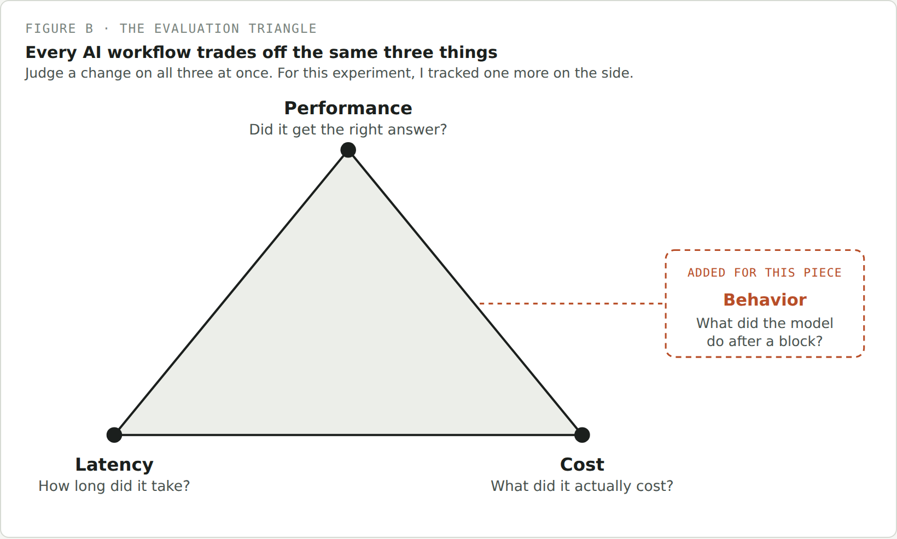
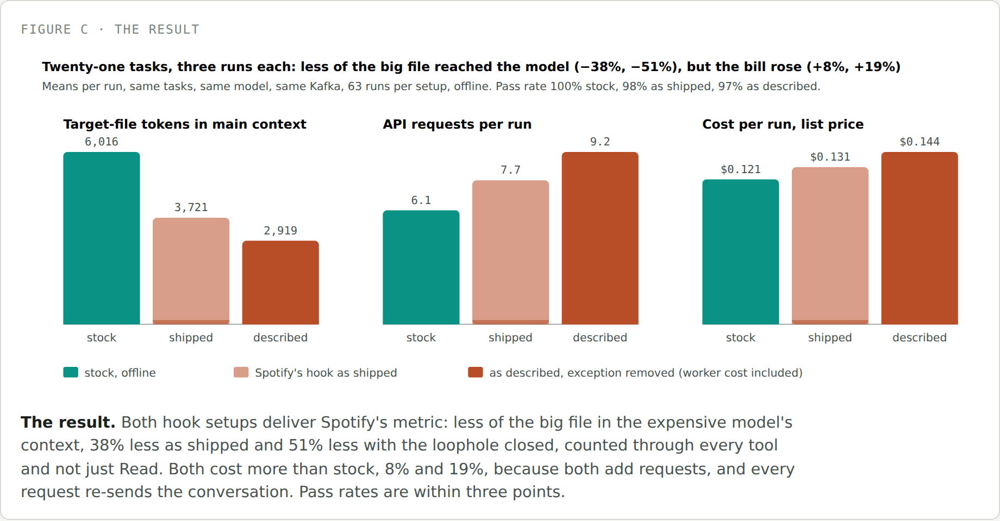
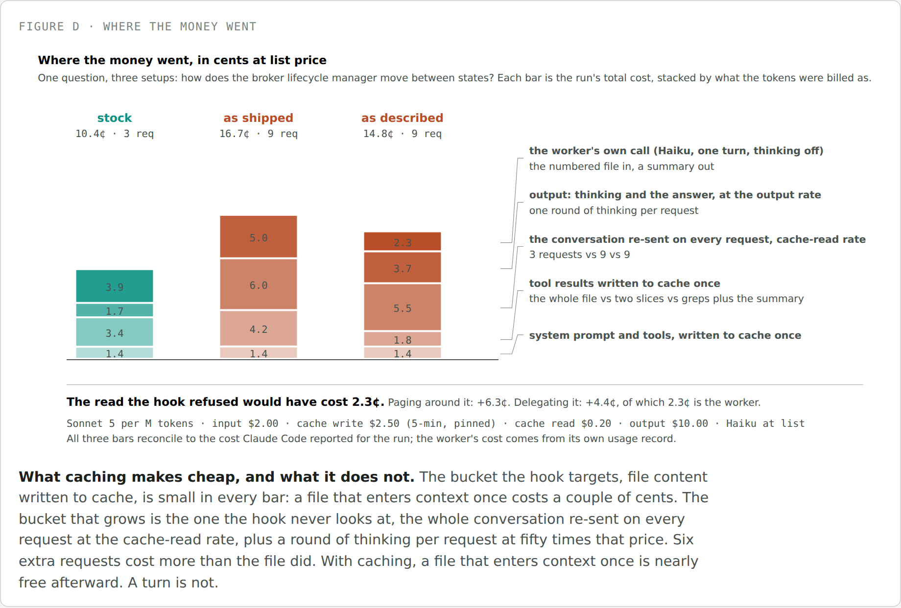

<title>Tokens Are Cheap, Turns Are Not</title>
<meta name="description" content="Spotify published a Claude Code plugin that blocks big file reads and hands them to a cheap model, claiming a 90% token cut. I rebuilt it on Kafka and measured the bill instead of the tokens.">
<link rel="stylesheet" href="https://fonts.googleapis.com/css2?family=IBM+Plex+Sans:wght@400;500;600&family=IBM+Plex+Mono:wght@400;500&display=swap">
<style>
  :root { --bg:#F5F6F3; --surface:#FFFFFF; --ink:#1B1F1D; --ink-2:#4A5350; --ink-3:#7B857F; --line:#D6DAD3; --stock:#0A9385; --hook:#B84E28; --soft:#ECEEE9; --tip:#EDF3EC; --tip-b:#5B8A6B; }
  @media (prefers-color-scheme: dark) { :root:not([data-theme="light"]) { --bg:#141816; --surface:#1C211E; --ink:#E6E9E4; --ink-2:#B4BBB5; --ink-3:#7F8882; --line:#313834; --stock:#1E9A8C; --hook:#C97440; --soft:#232925; --tip:#1B2420; --tip-b:#4E8760; } }
  :root[data-theme="dark"] { --bg:#141816; --surface:#1C211E; --ink:#E6E9E4; --ink-2:#B4BBB5; --ink-3:#7F8882; --line:#313834; --stock:#1E9A8C; --hook:#C97440; --soft:#232925; --tip:#1B2420; --tip-b:#4E8760; }
  * { box-sizing: border-box; }
  body { background:var(--bg); color:var(--ink); font-family:"IBM Plex Sans",system-ui,sans-serif; font-size:17px; line-height:1.65; padding-block:44px 90px; padding-inline:20px; }
  main { max-width:700px; margin:0 auto; }
  .kicker { font-family:"IBM Plex Mono",monospace; font-size:0.78rem; letter-spacing:0.08em; text-transform:uppercase; color:var(--ink-3); margin:0 0 10px; }
  h1 { font-size:2.1rem; line-height:1.2; margin:0 0 6px; letter-spacing:-0.01em; }
  .dek { font-size:1.15rem; color:var(--ink-2); margin:0 0 36px; max-width:56ch; }
  h2 { font-size:1.5rem; margin:56px 0 16px; letter-spacing:-0.005em; }
  h3 { font-size:1.1rem; margin:28px 0 10px; }
  p { margin:0 0 20px; }
  a { color:var(--hook); text-decoration-thickness: 1px; }
  em { font-style: italic; }
  .lede-em { font-style: normal; font-weight: 600; }
  code { font-family:"IBM Plex Mono",monospace; font-size:0.88em; background:var(--soft); padding:0.1em 0.35em; border-radius:4px; }
  pre.code { background:var(--soft); border-radius:8px; padding:14px 18px; overflow-x:auto; font-family:"IBM Plex Mono",monospace; font-size:0.82em; line-height:1.6; margin:8px 0 20px; color:var(--ink); }
  pre.code code { background:none; padding:0; font-size:1em; }
  pre.code .c { color:var(--ink-3); }
  figure { margin:32px 0; }
  figure img { width:100%; display:block; border:1px solid var(--line); border-radius:8px; background:var(--surface); }
  figcaption { font-family:"IBM Plex Mono",monospace; font-size:0.72rem; letter-spacing:0.05em; text-transform:uppercase; color:var(--ink-3); margin-top:10px; }
  .callout { border-left:3px solid var(--tip-b); background:var(--tip); border-radius:0 8px 8px 0; padding:16px 20px; margin:28px 0; }
  .callout .label { font-family:"IBM Plex Mono",monospace; font-size:0.72rem; letter-spacing:0.06em; text-transform:uppercase; color:var(--tip-b); display:block; margin-bottom:8px; font-weight:600; }
  .callout p:last-child { margin-bottom:0; }
  .callout.hook { border-left-color:var(--hook); }
  .callout.hook .label { color:var(--hook); }
  blockquote.tldr { border:none; margin:24px 0; padding:0 0 0 18px; border-left:2px solid var(--line); font-style:italic; color:var(--ink-2); }
  ul, ol { padding-left: 1.3em; margin: 0 0 20px; }
  li { margin-bottom: 10px; }
  li b { color: var(--ink); }
  .terms b { font-family:"IBM Plex Mono",monospace; font-weight:600; background:none; }
  hr.sec { border:none; border-top:1px solid var(--line); margin:48px 0; }
  .byline { color:var(--ink-3); font-size:0.9rem; margin: -16px 0 40px; }
  @media (max-width: 480px) { h1 { font-size: 1.7rem; } h2 { font-size: 1.3rem; } body { font-size: 16px; } }
</style>

<main>

<p class="kicker">Field dispatch</p>
<h1>Tokens Are Cheap, Turns Are Not</h1>
<p class="dek">Spotify published a Claude Code plugin that blocks the model from reading big files and hands them to a cheap worker instead, claiming a 90% cut in tokens. I rebuilt it on a real repo and measured the bill. The number they reported is real. The bill went up anyway.</p>
<p class="byline">Twenty-one tasks, three Claude Code setups, 189 offline sessions on one Java monorepo.</p>

<p>I feel like everyone has caught wind of the term <em>tokenomics</em> recently. From customer calls to consultants' LinkedIn posts, people are becoming more and more aware of AI spend and looking for a better way to quantify it. You can't price it for teams as a simple per-question price. Instead, we need to think about question complexity and model power. Teams are measuring that complexity by the tokens needed. Makes sense.</p>

<p>That's led many cost-wary teams to start building their own token optimizers. Seeing the trend take off, I wanted to dig into one of these examples myself. A few weeks ago, Spotify published a blog post that bounced around Hacker News and Reddit about a Claude Code plugin claiming a 90% cut in tokens. So in this piece, I'm taking you with me as we rebuild it and look under the hood.</p>

<blockquote class="tldr">TLDR; Spotify's token cut is real. With their hook enforced, Claude read 87% fewer lines of big files. But the bill went up 19%, with no measurable change in accuracy. (With the plugin exactly as published, costs rose 8%, too small to separate from chance.) Blocking a read doesn't remove the need for the information. Claude just takes more turns to get it, and every turn resends the whole conversation.</blockquote>

<h2>What Spotify Built, and Why</h2>

<p><b>The why:</b> The Spotify team noticed a trend in their Claude Code usage. A huge share of the tokens Claude Code used went toward tasks that didn't need the frontier-level reasoning power of high-powered LLMs.</p>

<p>For their use case, Spotify works on a large monorepo. In that repo, most of their questions or work end up falling into:</p>

<ul>
<li><b>Bulk file reads:</b> loading 700-plus-line files into context just to check a pattern or answer a question about a fraction of it.</li>
<li><b>Templated code generation:</b> writing boilerplate, configs, or scaffolding, where the structure is already known.</li>
</ul>

<p>Spotify didn't want to keep paying frontier prices to carry around the parts of a file nobody asked about.</p>

<p><b>The what:</b> To fix this, Spotify built a more deterministic workflow for these task types. It sends these requests to a smaller, cheaper model (the <em>worker</em>) to process and return the key insights to Claude as context. They chose Gemini 2.5 Flash as the worker: it takes the large file, reads it, and hands back the key context for Claude Code. They published it as a plugin called <em>shunt</em>, in their <a href="https://github.com/spotify/portal-ai-plugins/tree/b5ed620c6850f1ea7327b7cd9d0696aae0bf2d89/plugins/shunt">portal-ai-plugins</a> repository.</p>

<figure>
  
  <figcaption>Figure A · shunt's two delegation paths, at a glance</figcaption>
</figure>

<p>This is built with two Claude Code primitives working together:</p>

<ul>
<li><b>Skills</b> load instructions into context only when a task calls for them.</li>
<li><b>Hooks</b> are a checkpoint in front of a tool call, able to block or redirect it before the model ever sees the result.</li>
</ul>

<p>Spotify built two skills, bulk-reader and code-writer, that load when a request matches one of the two workflows above. They're really just instructions for how to hand a task off to the cheaper model and what to do with what comes back. The hook is what's supposed to force the choice: a <code>PreToolUse</code> hook checks the file Claude is about to read against a 350-line threshold. If it's over, the hook blocks the read and points the model to bulk-reader instead. A skill only helps if the model opens it, and the hook is the enforcer that's meant to make sure it does.</p>

<p>The assumption they're making is that fewer tokens sent to the expensive model means a proportionally smaller bill. That equivalence (a token avoided is a dollar saved) is exactly what the rest of this post tests.</p>

<h2>Our Experiment</h2>

<p>Does cutting tokens actually cut cost? That became the thesis of this evaluation. But as I started experimenting, I wanted a more holistic evaluation of the workflow the team built. I believe every AI workflow (predictive, generative, or agentic) should be judged on the same evaluation triangle: performance, latency, and cost.</p>

<figure>
  
  <figcaption>Figure B · the evaluation triangle</figcaption>
</figure>

<p>Getting a fair read on all three meant reproducing Spotify's setup as closely as an outsider reading a blog post can: their kind of repo, their hook, their two workflows, run against the plain Claude Code baseline they're implicitly comparing themselves to.</p>

<h2>Experiment Design</h2>

<p>Every task ran under three setups:</p>

<ul>
<li><b>Stock:</b> Claude Code with nothing added.</li>
<li><b>As shipped:</b> stock plus Spotify's plugin, exactly as published. The published hook has an exception: it still lets Claude read a big file if it asks for a specific range of lines, so Claude can page around the block and read the whole file anyway.</li>
<li><b>As described:</b> the same plugin with that exception removed, so the hook blocks the way Spotify's post describes.</li>
</ul>

<p>Both hook setups use a one-turn call to Claude Haiku in place of Spotify's hosted Gemini model, since I don't have access to their internal system, only a Claude subscription ;).</p>

<h3>Why Kafka</h3>

<p>Spotify's code is private, so I needed a public repo that looks like theirs in the one way the hook cares about: lots of files over 350 lines, in a language their benchmark used. There's a second, less obvious constraint. Stock Claude Code already refuses to read very large files on its own (anything over about 25,000 tokens gets paged), so the test files have to sit between Spotify's 350-line threshold and Claude Code's own limit, or the hook never gets a chance to fire.</p>

<p>Backstage, Spotify's own open-source project, was the obvious first pick and lost: only 7.5% of its files clear 350 lines, holding 38% of its code. Apache Kafka has 17% of its files over that line, holding 64% of the code. So the test repo is Kafka, pinned to one commit, in Java and Scala.</p>

<figure>
  
  <figcaption>Why we used Kafka instead of Spotify's own open-source Backstage.</figcaption>
</figure>

<p>One honest limit: Kafka is a repo the model has seen in training, and Spotify's code is not. So every session runs offline and sandboxed: no web tools, no network commands, no reading anything outside the checkout, a private empty <code>/tmp</code> folder per session, and a line in the system prompt telling the model to answer from the repository, not memory. That same constraint, Claude Code cut off from the internet, applied to every test.</p>

<h3>Why We Ran It Through Claude</h3>

<p>One interesting thing I found in their code: Spotify's own benchmark never sends a single request through Claude Code. It just compares the token count of the original file with the token count of Gemini's summary.</p>

<p>To test the plugin more thoroughly, this eval runs real Claude Code sessions. Every task runs start to finish in one live, headless (no chat window) <code>claude -p</code> session per task per setup. That's the real Claude Code model, on the real repo, making its own tool calls, hitting the real hook, and choosing its own next move after a block. That's how we can see whether the model opens the skills, how it handles the block, what it loads into context, and what all of that costs.</p>

<h3>How It Ran</h3>

<p>So now we have Kafka, and we know we want to run it through Claude. I'm not going to sit and type prompts into my Claude Code window 189 times. Nothing here is interactive: a script starts Claude Code in headless mode with the same files, constraints, and setup for every task. This is the actual command, the same for all three setups:</p>

<pre class="code">CLAUDE_CODE_ENABLE_TELEMETRY=1 \
OTEL_EXPORTER_OTLP_ENDPOINT=http://127.0.0.1:4318 \
CLAUDE_CODE_PROMPT_CACHE_TTL=5m CLAUDE_CODE_SUBAGENT_PROMPT_CACHE_TTL=5m \
unshare -m bash -c 'mount -t tmpfs none /tmp && exec "$@"' _ \
claude -p "$PROMPT" \
  --model claude-sonnet-5 \
  --permission-mode acceptEdits \
  --settings "$HARNESS/settings.json" \
  --append-system-prompt "Answer from the repository checked out in the \
working directory. Do not rely on memory of the upstream project or on \
the internet." \
  --max-turns 40 \
  --output-format json</pre>

<p>The cache setting at the top makes sure every setup pays the same rate to store a file in the prompt cache (more on caching below), so Claude Code can't quietly switch billing tiers mid-run and skew the comparison.</p>

<ul>
<li><code>--model</code>: every setup runs on the same baseline Sonnet model.</li>
<li><code>--settings</code>: loads the offline sandbox.</li>
<li><code>unshare</code>: gives each session its own empty <code>/tmp</code>, so nothing it writes can be found by a later run.</li>
</ul>

<p>When a run finishes, the harness collects the cost, token usage, full transcript, and OpenTelemetry trace (a step-by-step log of every request), checks what changed in the repo, grades the answer, and deletes the workspace. The next run starts clean.</p>

<h2>Evaluation Design</h2>

<h3>Why These Tasks</h3>

<p>As a non-Kafka expert, I'll admit I cheated and used Claude to help think through which synthetic tasks would make the most sense. I focused on five categories that cover what Spotify named as workflows and future ideas in their blog, with 3–5 tasks each for a small but early sample:</p>

<ul>
<li><b>Spotify's own benchmark (4 tasks).</b> Their four tasks, rebuilt on Kafka with the same shapes and file sizes, so the comparison is theirs first.</li>
<li><b>Needle reads (4 tasks).</b> One fact buried in a file of 1,000 to 1,900 lines. This is the exact case Spotify's post describes (read 700 lines to check one thing), and the case their benchmark never tests.</li>
<li><b>Their shapes at real file sizes (5 tasks).</b> The same kinds of questions as their four, but on files big enough to actually trip the 350-line threshold, which two of theirs never do.</li>
<li><b>Harm (5 tasks).</b> Precise edits and debugging, the two task types Spotify's own post says the approach isn't for. The hook only sees a line count, so it fires on these anyway. I wanted to know if that costs anything.</li>
<li><b>Controls (3 tasks).</b> The same shapes on small files, to measure what the plugin costs just by being installed. (On one of them, Claude went looking in a neighboring 700-line file, so the hook fired there too.)</li>
</ul>

<p>I ran every task three times, interleaved by setup so time of day never lines up with one setup by coincidence: 189 sessions, about $25 at list price.</p>

<h3>Why These Metrics</h3>

<p>Spotify's own evaluation used one metric: tokens avoided. I kept it to check their findings against mine, and added the rest of the evaluation triangle, plus one more:</p>

<ul>
<li><b>Performance:</b> Did the task actually get done? A cheaper answer isn't great if it's missing the point. Measured by whether the answer was correct and whether Claude found the right file.</li>
<li><b>Cost:</b> What each Claude Code session actually cost, broken down per turn.</li>
<li><b>Latency:</b> For agents this usually tracks cost closely, but I was curious what it feels like for the person waiting. Measured by wall-clock time, turns per run, and time per turn.</li>
<li><b>Behavior:</b> What the model did right after a block. Did it call the worker, run a search, or try reading part of the file?</li>
</ul>

<p>Behavior earned its spot after my first run, when I realized the hook as published wasn't really blocking. That's why the third setup exists.</p>

<h2>Some Things Worth Remembering Before the Results</h2>

<p>Tokens you already know. Two other mechanics matter for what's coming.</p>

<ul>
<li><b>No memory between turns.</b> The model itself remembers nothing between turns. Not here, not in ChatGPT, not anywhere. Every time Claude Code asks it something, it resends the entire conversation so far: every earlier message, every file it's read, every tool result. A session feels continuous because Claude Code rebuilds and resends everything each turn, not because the model remembers.</li>
<li><b>Prompt caching.</b> A discount, not a memory. If the same content was sent to the model in the last few minutes, sending it again costs a tenth of the normal price. It changes what resending costs. It doesn't stop the resending.</li>
</ul>

<p>We'll touch on them as we jump into the numbers. But they're important concepts to keep in mind when thinking about Claude's performance.</p>

<h2>Drumroll… Our Results</h2>

<h3>The Headline Numbers</h3>

<figure>
  
  <figcaption>Figure C · twenty-one tasks, three runs each</figcaption>
</figure>

<p>Here's how the three setups compare on the evaluation triangle, averaged across all 21 tasks:</p>

<ul>
<li><b>Performance</b> didn't change in any way I could measure: 100% of stock runs passed, 98% as shipped, and 97% as described. That's three failures out of 189, too few to say the hook hurt accuracy.</li>
<li><b>Cost</b> went up. With the hook enforced, a run cost 19% more on average (14.4¢ versus 12.1¢). Comparing each task to itself, the increase was likely somewhere between 7% and 39%, so it's not a fluke. As shipped, cost rose 8%, but that's within what chance alone produces here: on tasks where the hook never fired, costs still moved anywhere from 37% lower to 13% higher between setups.</li>
<li><b>Latency</b> went up with it: 6.1 turns per run for stock (a turn is one request to the model), 7.7 as shipped, and 9.2 as described. Wall time went from 39 seconds to 51.</li>
<li><b>Behavior</b> is where the plan broke down. The enforced hook blocked a read 96 times, and only 4 of those times did the model open Spotify's skill next. In 41 it searched with grep instead. In 33 it tried reading a smaller piece of the file, which was blocked too. In 12 it ran a shell command, and several of those used <code>sed</code> to print the same lines the hook had just refused.</li>
</ul>

<h3>Fewer Tokens Read, More Tokens Processed</h3>

<p>So how can the hook cut tokens and still cost more? It depends on which tokens you count. Spotify's own formula only works when the worker gets called, which happened in 0 of 63 as-shipped runs and 5 of 63 as-described runs. So I counted three things I could measure on every run:</p>

<figure>
  
  <figcaption>Three ways to count what "90% fewer tokens" could mean, per run across the same 189 sessions.</figcaption>
</figure>

<ul>
<li><b>Lines of the big file Claude read directly:</b> down 87% with the hook enforced. This is roughly what Spotify measured with Gemini.</li>
<li><b>Anything from the big file that reached the model,</b> search results included: down 51%. Blocking a read doesn't stop Claude from searching the same file.</li>
<li><b>Total tokens the model processed,</b> most of them the conversation being resent each turn: up 21% as shipped and 41% as described.</li>
</ul>

<p>The first two are what the hook controls. The third is what drives the bill, which rose 8% and 19%. The bill rose less than the token count because most of those extra tokens are cheap, cached resends.</p>

<h3>Why It Costs More</h3>

<p>Every turn resends the conversation, and the conversation grows every turn. Each resent token is cheap thanks to caching, but it adds up. Blocking a big read does save a little: about a cent per run less spent storing files in the cache. But every block adds turns. With the hook enforced, those extra turns cost about 1.6¢ more per run in resending, 0.6¢ more in new output from the model, and 0.3¢ for the worker. The savings from blocking were smaller than the cost of the extra turns.</p>

<p>Here's what that looks like on one question: what a function called <code>ready()</code> returns, in a 1,500-line file.</p>

<ul>
<li><b>Stock</b> searched for the function, read the 35 lines it needed, and answered. That took about 4 turns and 5.1¢ on average.</li>
<li><b>As described</b> searched twice, was blocked trying to read a 30-line piece, was blocked again on a 20-line piece, then searched again. That took about 6 turns and 6.8¢, 34% more for the same answer.</li>
</ul>

<p>Stock was already reading just the part it needed. The hook couldn't make that cheaper. It could only add turns.</p>

<p>The same thing happens when the answer needs most of a big file. For one question (how the broker lifecycle manager moves between states, answered from a 770-line file), stock read the file and answered in about 4 turns. The hook setups took about 9 to 10 turns and cost about 45% more. Figure D breaks down one run of each by where the money went.</p>

<figure>
  
  <figcaption>Figure D · where the money actually went, same question, from the OpenTelemetry trace</figcaption>
</figure>

<h3>Which Tasks Got Cheaper</h3>

<p>The hook fired on 16 of the 21 tasks. Whether it saved money came down to one thing: what stock Claude would have done anyway.</p>

<ul>
<li><b>Stock read a whole big file but only needed part of it:</b> the hook saved 7% to 18% (four tasks). For example, to find which methods lack tests, stock read two whole files, 1,412 lines. With the hook, a search did the same job.</li>
<li><b>Stock already read just a small piece:</b> the hook cost 17% to 52% more (six tasks, including the <code>ready()</code> example). The enforced hook blocks any read of a big file, even a 20-line one, so it could only add turns.</li>
<li><b>The answer needed most of the file:</b> the hook cost 42% to 86% more (four tasks, such as listing every config key in a file). The content has to come in one way or another, and the block just adds turns.</li>
</ul>

<p>The other two tasks where it fired were a control, where Claude wandered into a big neighboring file, and one of Spotify's tasks, where a single run went off and cost 46¢ on its own.</p>

<p>Of Spotify's own four benchmark tasks, one is the whole-file kind, and two never tripped the hook at all. A line-count threshold can't see any of this. It knows the file is big, but not whether Claude needs one line of it or all of it, or whether Claude was about to read the whole thing in the first place.</p>

<figure>
  
  <figcaption>Hook cost relative to stock, by category, averaged per task. Spotify's own four is pulled up by one run that started a background subagent and cost 46¢ on its own.</figcaption>
</figure>

<h2>Overall…</h2>

<h3>Let Claude Be Claude</h3>

<p>This wasn't a crazy idea, and knocking Spotify isn't the point of this piece. Token spend is one of the most talked-about problems in AI right now. Spotify actually built something and shared it publicly, which is the only reason a hobby blogger like me could rebuild it.</p>

<p>What's changed is the platform around it. The savings shunt was built to force are starting to show up on their own, in three places:</p>

<ul>
<li><b>In the tokens.</b> Prompt caching makes resending content you've already sent cost a tenth as much.</li>
<li><b>In the context window.</b> Claude Code no longer has to load every tool definition up front. With tool search, MCP tool definitions stay out of context until a task needs them, and Claude loads only those (<a href="https://code.claude.com/docs/en/agent-sdk/tool-search">docs</a>, <a href="https://www.anthropic.com/engineering/advanced-tool-use">Anthropic</a>).</li>
<li><b>In the harness.</b> In my stock runs, with no hook and no instructions, Claude already searched instead of reading whole files on most needle and harm tasks.</li>
</ul>

<p>Boris Cherny, who leads Claude Code at Anthropic, said something similar at YC Startup School, in a conversation with YC's Diana Hu: "Every six months, delete your claude.md, delete your skills, delete your hooks, see what the model does, and it might surprise you." In the same talk, he said his team deleted over 80% of Claude Code's own system prompt for Opus 5 (<a href="https://www.barath.ai/learnings/boris-cherny-yc-startup-school-2026">write-up</a>, <a href="https://sozai.app/transcript/boris-cherny-cut-80-percent-claude-code-prompt/">transcript</a>). I take a company's claims about its own product with a grain of salt, but it matches what I saw in my stock runs.</p>

<p>That's what I mean by "let Claude be Claude." It doesn't mean stop building. Spotify was right to test this. But every optimization is a bet on today's model, and the bet needs rechecking whenever the model or the harness changes. A hook that paid off on an older model might cost you on a newer one.</p>

<h3>Claude Plugin Evals</h3>

<p>Speaking of letting Claude be Claude: while this sat in my drafts for a month, Anthropic beat me to it. In September it released <code>claude plugin eval</code>, which runs your plugin against a set of test cases, scores each result, and by default runs every case again without the plugin so you can see what the plugin adds. <code>claude plugin eval init</code> will even ask what a good result looks like and draft the test cases for you. The summary shows each case's score with and without the plugin, the difference, and the cost.</p>

<p>That's the same basic comparison this piece makes: plugin versus no plugin, same tasks, cost included. The difference is depth. Plugin eval tells you whether a plugin helped and what it cost. This eval went a level deeper, turn by turn, to see why. For most teams, plugin eval is the right place to start. If the cost column surprises you, that's when it's worth digging into the traces.</p>

<p>And because it's built in, it's easy to rerun every time a new model ships. Everyone's watching tokens right now, but turns are what drive the bill.</p>

<p class="byline" style="margin-top:8px">The full write-up, with the deviations table, the metrics as equations, the validation checklist, and all 189 runs, is at <a href="https://github.com/hmassa14/TurnsNotTokens">github.com/hmassa14/TurnsNotTokens</a>.</p>

</main>
